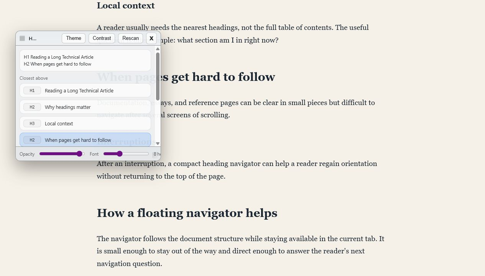

Show Headers Bookmarklet
A bookmarklet that opens a floating heading navigator on long article pages.
Loading...
Then open an article and click the bookmarklet from your bookmarks bar.

What it does
Show Headers reads the page's h1 through h6
headings, finds your current position, and opens a compact panel with
nearby headings.
It works best on article-like pages where the heading structure already carries meaning.
Source
The install link is generated from
showDocumentHeadersBookmarklet.toString(), so the bookmarklet
source lives in one file: bookmarklet.js.
Show generated bookmarklet URL
Loading...